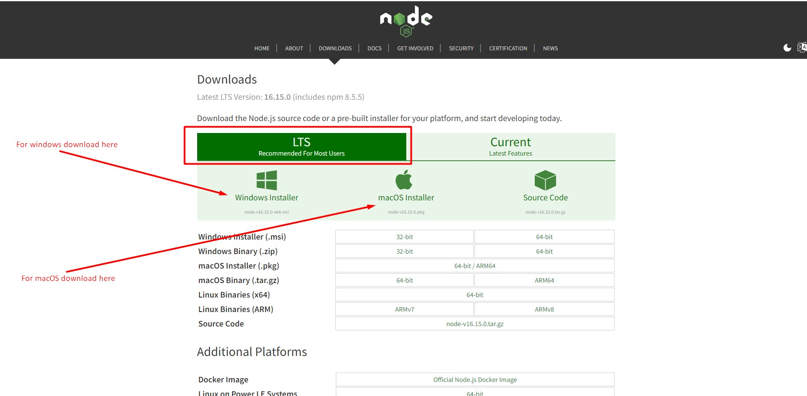

1. Introduction
We would like to thank you for choosing Nerko Template.
We made Nerko from the ground-up with flexibility in mind. Each element of nerko
is extremely customizable, where you can make
nerko to reflect your own
branding styles.
The guide gives you detailed methodologies about how you can customize nerko and make it fit your brand perfectly!
1.1 Requirements
There are system requirements in order to install and setup Nerko template and its components properly. Make sure that you are running the node.js and npm in your computer. You have to maintain this version (Node js >= 14.0.0 and npm >= 5.6)
Recommended Version Nodejs v16.15.0
If you don't have Node js in your computer please download and install from here: https://nodejs.org/en/download/
Install Npm Packages
NPM : You must have to npm install packages. You can do this by running npm install from the root of your project to install all the necessary dependencies.
npm install
Development server
Run npm run dev for a dev server. Navigate to http://localhost:3000/ . The app will automatically reload if you change any of the source files.
npm run dev
Build
Run npm run build to build the project. The build artifacts will be stored in the .next/ directory.
npm run build
Run npm run start to start build version in your localhost.
npm run start
1.2. What's Included
After purchasing Nerko template on themeforest.net with your Envato account, go to your Download page. You can choose to download Nerko template only or the entire Nerko template package which contains the following files:
- Nerko: An Installable Next js template file.
- documentation: This folder contains what you are reading now.
2. Next Js Installation
Please follow the instructions given below how you can install Next js on your local host:
Open you command prompt and run those command for local host
npm install
npm run dev
Know more about Next Js Project Deployment Please Click here
3.1. Change Site Title and Favicon
To change your Site title and Favicon open the Nerko in your editor and go to the location by following screenshot which are given bellow.
You can change Site title following this screenshot
You can change Favicon following this screenshot
3.2. Change Logo
To change your Site Logo open the nerko in your editor and go to the location by following screenshot which are given bellow.
3.3. Customize Menu
To customize your Site Menu open the nerko in your editor and go to the location by following screenshot which are given bellow.
To customize your Site Mobile Menu open the nerko in your editor and go to the location by following screenshot which are given bellow.
4.1. Header
From the located file in the image you can customize you site header layout
4.2. Footer
Here is the file where you can customize your footer
4.3. Page Banner
To change Page Banners and Slider here is all file location
4.5. Global Color
To change nerko Global Color
6. Support
Support Scope
Included in Free Support Scope:
- Fixing bugs
- Helping clients in changing site contents by sending instructions that couldn’t be covered by documentation
NOT Included in Free Support Scope:
- Any type of custom changes
- Any type of request to update clients’ site contents
Paid Support Scope:
Paid support is not a part of Free Support when you purchase the template from themeforest. We understand that some clients need custom changes while using our template. For that we kept an option for paid support which includes:
- Custom change request
- Custom pages
- Custom features
We kept a flat rate for our paid support which is $25/hour.
Support Ticket
Please send your support request here. You will response within 1 business day.
Regards,
ReacThemes Support Team